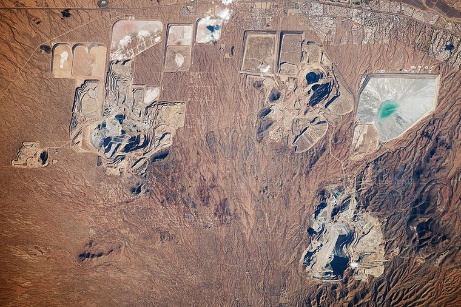
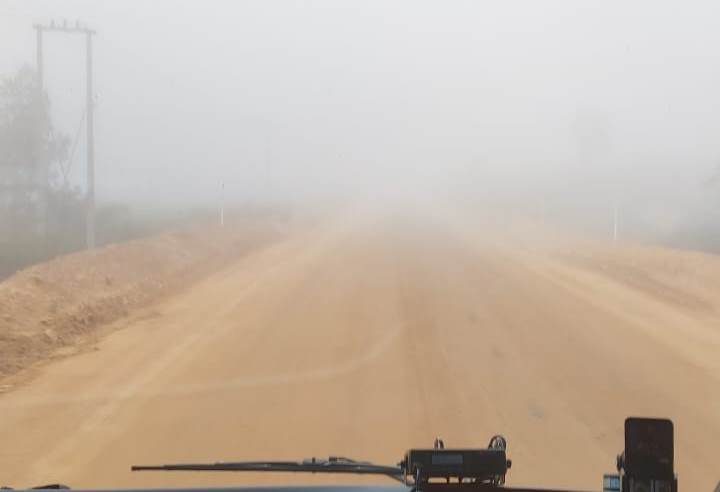

Modul 02 · Pengantar Rekayasa dan Desain
Materi ini membahas penerapan Teknik Komputer pada seluruh siklus pertambangan: eksplorasi dengan data geologi dan citra, LiDAR, dan UAV; otomasi alat berat dan sensor fusion; IoT, RFID, dan pemeliharaan prediktif; jaringan private 5G, edge computing, AI keselamatan, serta keamanan sistem industri.
Teknik pertambangan adalah bidang rekayasa yang berhubungan dengan bagaimana sumber daya mineral ditemukan, direncanakan, ditambang, diangkut, diolah, sampai tambang ditutup dan lahannya direhabilitasi. Teknik Komputer menyediakan perangkat keras, perangkat lunak, jaringan, pengumpulan data, kecerdasan buatan, dan otomasi yang dipakai di setiap tahap tersebut.
Hubungan keduanya bersifat timbal balik. Tambang menentukan data apa yang perlu diukur, pada frekuensi berapa, dan pada ketelitian berapa. Komputer menentukan bagaimana data itu diperoleh, disimpan, dianalisis, dan diubah menjadi tindakan.
Dunia fisik / lapangan
|
Sensor, kamera, drone, bor
|
Pengumpulan data
|
Jaringan
|
Server, database, edge
|
Pengolahan data
|
AI dan analitik
|
Keputusan
|
Tindakan pada mesin atau proses
|
Umpan balik ke sensorRantai ini berlaku juga pada sistem kendali, PLC, dan SCADA yang dibahas pada modul sebelumnya. Perbedaannya adalah objek plant-nya: bukan tangki atau motor, melainkan excavator, haul truck, crusher, serta kondisi geologi dan lingkungan tambang.
Kegiatan pertambangan berjalan dalam tahap yang berurutan, dan pada setiap tahap ada keluaran yang dipakai sebagai masukan tahap berikutnya.
Geoscience awal
|
Eksplorasi
|
Penemuan (discovery)
|
Studi kelayakan (feasibility)
|
Perencanaan dan pembangunan
|
Operasi dan produksi
|
Pengolahan
|
Penutupan (decommissioning)
|
Rehabilitasi dan penutupan
|
Pengelolaan pasca-tutupResources Victoria memakai urutan tahap berikut dalam strategi sumber daya mineralnya: pre-competitive geoscience, exploration, discovery, feasibility, development, operation and production, decommissioning, rehabilitation and closure, lalu post-closure management. Seluruh tahap disertai pemantauan dan evaluasi berkelanjutan.
Undang-Undang Nomor 3 Tahun 2020 Pasal 1 angka 6 mendefinisikan usaha pertambangan sebagai rangkaian penelitian umum, eksplorasi, studi kelayakan, konstruksi, penambangan, pengolahan dan/atau pemurnian, pengembangan dan/atau pemanfaatan, pengangkutan dan penjualan, sampai pascatambang.
Istilah lain yang dipakai dalam industri, seperti stripping ratio, dilution, dan recovery, adalah parameter teknis pertambangan yang dipakai pada tahap perencanaan dan operasi, bukan tahap perizinan.
Undang-Undang Nomor 3 Tahun 2020, diundangkan pada 10 Juni 2020, mengubah Undang-Undang Nomor 4 Tahun 2009 tentang Pertambangan Mineral dan Batubara. Perubahan utamanya mencakup pengelolaan wilayah pertambangan, pengalihan kewenangan, rencana tata cara pertambangan nasional, kewajiban divestmen, nilai tambah dan pengolahan domestik, reklamasi, serta pascatambang.
| Istilah | Pasal | Arti |
|---|---|---|
| IUP | 1 (7) | Izin Usaha Pertambangan |
| IUPK | 1 (11) | Izin Usaha Pertambangan Khusus, berlaku di wilayah izin usaha pertambangan khusus |
| IPR | 1 (10) | Izin Pertambangan Rakyat, terbatas pada wilayah dan nilai investasi tertentu |
| SIPB | 1 (13a) | Surat Izin Penambangan Batuan |
| IUPK KO | 1 (13b) | IUPK sebagai kelanjutan operasi kontrak atau perjanjian |
| IUJP | 1 (13d) | Izin Usaha Jasa Pertambangan |
| RKAB | — | Rencana Kerja dan Anggaran Biaya, yaitu rencana produksi dan penjualan tahunan yang disetujui ESDM |
Istilah RKAB tidak didefinisikan langsung dalam naskah undang-undang yang diperoleh, melainkan melalui praktik ESDM dan temuan Dispute Settlement WTO.
| Jenis mineral | Masa eksplorasi (Pasal 42) | Masa operasi produksi (Pasal 47) |
|---|---|---|
| Logam | 8 tahun | 20 tahun, ditambah 2 kali perpanjangan 10 tahun |
| Batuan | 3 tahun | 5 tahun, ditambah 2 kali perpanjangan 5 tahun |
| Batubara | 7 tahun | 20 tahun, dapat diperpanjang |
| Non-logam tertentu | 7 tahun | 20 tahun, ditambah 2 kali perpanjangan 10 tahun |
Perpanjangan masa eksplorasi dapat diberikan satu tahun setiap kali berdasarkan Pasal 42A. Pasal 83 mengatur bahwa wilayah izin usaha pertambangan khusus untuk eksplorasi logam dibatasi 100.000 hectare, untuk batubara 50.000 hectare, dan masa operasi dapat mencapai 30 tahun bila Purchaser aprobada di dalamnya terintegrasi dengan pengolahan atau pemurnian. Pasal 36 ayat 3 mewajibkan pemegang izin pada tahap operasi produksi conducts dan membiayai eksplorasi lanjutan setiap tahun.
Badan Pusat Statistik mencatat kategori usaha pertambangan dan penggalian menurun dari 10,5 persen produk domestic bruto pada 2023 menjadi 9,15 persen pada 2024 dan 8,75 persen pada 2025. Pada 2025 kategori tersebut tumbuh negatif 0,66 persen dan menjadi satu-satunya lapangan usaha yang kontraksi, sementara pertumbuhan ekonomi nasional 5,11 persen.
| Tahun | Porsi PDB | Nilai | Pertumbuhan |
|---|---|---|---|
| 2023 | 10,5 % | Rp2.190 triliun | +6,12 % |
| 2024 | 9,15 % | Rp2.026,6 triliun | — |
| 2025 | 8,75 % | Rp2.084,6 triliun | −0,66 % |
Kategori statistik ini mencakup minyak dan gas, panas bumi, batubara, bijih logam, dan pertambangan lainnya, sehingga tidak sama dengan industri tambang batuan saja. Pada tahun 2025 produk domestic bruto nasional mencapai Rp23.821,1 triliun dengan pertumbuhan 5,11 persen.
USGS Mineral Commodity Summaries 2026 mencatat produksi nikel Indonesia 2.600.000 ton dari total dunia 3.900.000 ton, sehingga sekitar 67 persen dan peringkat pertama dunia. Produksi bijih tembaga 710.000 ton dari 23.000.000 ton dunia. Batubara Indonesia tercatat sebagai produsen terbesar ketiga dan eksportir batubara termal terbesar, dengan kontribusi sekitar 40 persen perdagangan batubara laut dunia. Bijih nikel dilarang ekspor sejak 1 Januari 2020 dan bijih bauksit sejak Juni 2023.
Catatan sumber angka
Angka produksi batubara tahun 2025 berasal dari ESDM dan lembaga energi, bukan dari tabel USGS karena dokumen USGS untuk batubara tidak dapat diambil saat riset. Angka nikel dan tembaga berasal langsung dari USGS MCS 2026.
| Tahap | Penerapan Teknik Komputer | Data yang dihasilkan |
|---|---|---|
| Eksplorasi | Citra satelit, drone, LiDAR, GIS, machine learning | Peta alterasi, peta prospek mineral, model terrain |
| Kelayakan | Pemodelan geologi, simulasi, block model | Pendekatan cadangan dan economically |
| Perencanaan | Perancangan haul road, disain pit, simulasi blast | Rancangan operasi dan target produksi |
| Produksi | Sensor, PLC, dispatch, fleet management | Output, waktu siklus, utilisasi |
| Pengangkutan | GNSS, autonomy, teleremote | Posisi kendaraan, cat, produk |
| Pemeliharaan | IoT, condition monitoring, prediksi | Sisa umur komponen, jadwal perawatan |
| Keselamatan | Kamera, proximity detection, AI, wearable | Peringatan tabrakan, status kelelahan |
| Lingkungan | Sensor kualitas air, emisi, remote sensing | Tren kualitas, laporan kepatuhan |
| Komunikasi | Private LTE dan 5G, edge computing | Konektivitas terkendali |
| Analisis | Database, data lake, machine learning | Dashboard, laporan, keputusan |
Eksplorasi adalah usaha mencari dan menilai keberadaan sumber daya mineral. Secara konsep, data yang digunakan terbagi menjadi beberapa keluarga data.
| Data | Isi | Metode |
|---|---|---|
| Geologi | Litologi, stratifikasi, struktur, alterasi | Pemetaan, pengamatan singkap |
| Geofisika | Anomali medan magnetik, gravitasi, listrik | Magnetik, gravitasi, resistivitas, elektromagnetik |
| Geokimia | Kandungan unsur pada batuan, tanah, sedimen | Sampling, ICP-MS, ICP-OES, XRD |
| Pengeboran | Datalubang dan logging | RQD, gamma, resistivitas, televiewer |
| Remote sensing | Citra optik, termal, hyperspectral | Satelit, pesawat, drone |
| Topografi | Model permukaan digital | LiDAR, fotogrammetri |

Geographic Information System adalah kesatuan perangkat keras, perangkat lunak, data, orang, dan metode untuk memperoleh, menyimpan, menganalisis, serta menyajikan data yang memiliki acuan lokasi. Dalam pertambangan, GIS dipakai untuk estimasi cadangan berbasis block model dan geostatistika, pemodelan geologi dan struktur, pengelolaan basis data lubang bor, pemetaan prospek mineral, perancangan haul road, rekonsiliasi volume berbasis LiDAR, serta pengelolaan wilayah izin. Aplikasi umum memakai QGIS, GRASS, dan SAGA, sedangkan paket komersial yang umum adalah Vulcan, Leapfrog Geo, Datamine, Surpac, dan GeoStudio.
Remote sensing adalah pengumpulan informasi tentang permukaan tanpa sensor harus menyentuh objek secara langsung. Sensor dapat berada di darat, pesawat, UAV, atau satelit.
Satelit atau pesawat
|
Sensor optik, termal, atau hyperspectral
|
Citra untuk setiap band
|
Koreksi radiometrik dan geometrik
|
Ekstraksi cirian spektral
|
Klasifikasi dan pemetaan
|
Analisis geologiUSGS menjelaskan bahwa data remote sensing dapat dipakai untuk melihat topografi, vegetasi, tanah, mineral, serta dampak kegiatan tambang. Pemetaan mineral permukaan yang dihasilkan USGS pada resolusi 15 meter untuk area lebih dari 380.000 kilometer persegi di California dan Nevada.
| Sensor | Jumlah band | Resolusi spasial | Rentang spektral |
|---|---|---|---|
| ASTER | 14 total: 4 VNIR, 6 SWIR, 5 TIR | 15, 30, 90 m | 0,52 sampai 11,65 mikrometer |
| Landsat 8 dan 9 OLI | 9 band | 30 m, pankromatik 15 m | 0,43 sampai 2,29 mikrometer |
| Landsat 8 dan 9 TIRS | 2 band | 100 m, dapat dikoreksi 30 m | 10,6 sampai 12,51 mikrometer |
| Landsat 8 dan 9 total | 11 band | — | — |
| AVIRIS pesawat | 224 band | 20 m atau 4 m | 400 sampai 2500 nm |
| EO-1 Hyperion | 242 kanal nominal, 220 valid | 30 m | 0,357 sampai 2,576 mikrometer |
| EnMAP | 224 band | 30 m | 418,2 sampai 2445,5 nm |
Koreksi yang sering keliru
ASTER memiliki 14 band, bukan 9 band VNIR dan 23 band SWIR. Angka sembilan band muncul pada sebagian publikasi USGS untuk Combination 3 band VNIR dan 6 band SWIR yang dipakai bersama. Selain itu, detektor SWIR ASTER dinonaktifkan sejak April 2008, sehingga data SWIR praktis bersifat arsip. Setelah kegagalan daya pada 28 November 2024, ASTER kembali menyalakan VNIR pada 18 Januari 2025 dan TIR pada 15 April 2025. Landsat 8 dan 9 terdiri dari OLI 9 band ditambah TIRS 2 band.
Kamera biasa merekam tiga kanal merah, hijau, dan biru. Sensor hyperspectral merekam puluhan sampai ratusan kanal panjang gelombang yang berdekatan. Setiap mineral memiliki karakteristik penyerapan atau sidik jari spektral berupa panjang gelombang yang diserap dan yang dipantulkan.
Material di permukaan
|
Menyerap dan memantulkan cahaya
|
Spektrum 200 sampai 2500 nm
|
Sensor hyperspectral
|
Sidik jari spektral tiap material
|
Ekstraksi endmember dengan PCA
|
Matched filter untuk pencarian mineral
|
Peta mineralUSGS memakai principal component analysis untuk mengambil endmember, lalu spectral matched filter untuk memetakan mineral dan jenis alterasi. Mineral alterasi yang dipetakan meliputi kaolinite, smectite, illite muscovite, chlorite epidote, jarosite, oksida besi, serta silika opalin. Penyerapannya muncul pada SWIR untuk gugus Fe dan Mg OH, Al OH, dan Si OH. Band 7 Landsat pada 2,09 sampai 2,35 mikrometer dapat memisahkan lempung alterasi hydrothermal, sedangkan TIR memberi informasi inersia termal. USGS juga menyimpan pustaka spektral dengan ribuan spektrum material terukur.
Mineral prospectivity mapping memprediksi wilayah yang berpotensi mengandung mineral. Tinjauan terhadap 255 studi periode 2016 sampai 2025 mencatat decision tree muncul pada 114 studi atau 44,71 persen, random forest pada 107 studi, dan support vector machine pada 60 studi. Seluruh studi convolutional neural network berada pada rentang 2021 sampai 2025.
Contoh hitung 1 · Membaca angka dari tinjauan
Jumlah studi tinjauan = 255
Decision tree = 114 studi -> 114/255 = 44,71 %
Random forest = 107 studi -> 41,96 %
Support vector machine= 60 studi -> 23,53 %
Convolutional NN = hanya pada 2021-2025 (0 studi sebelum 2021)Contoh performa yang dilaporkan: random forest pada deposit tembaga emas Olympic Dam memberi area di bawah kurva 0,93; convolutional neural network pada deposit porphyri tembaga Duolong memberi 0,982; pada deposit Qulong dan Jiama, model yang dapat ditafsirkan memberi 0,970.
Perlu diperhatikan bahwa ketepatan yang dilaporkan pada data eksplorasi kecil sering terlalu optimistis. Pada data 20 deposit epitermal dengan 14 peta prediktor, support vector machine mencapai akurasi pelatihan 89 sampai 97 persen, tetapi kurva success rate menunjukkan random forest lebih unggul, karena SVM terlalu sesuai terhadap data sedikit.
LiDAR memancarkan pulsa laser dan mengukur waktu balik pantulan untuk menghasilkan titik tiga dimensi. Fotogrammetri UAV menghitung koordinat titik dari foto yang saling bertumpuk. Keduanya dipakai untuk memodelkan permukaan digital, menghitung volume material, dan memantau perubahan Rupert.
| Level | Sumber | RMSE vertikal | Kerapatan titik | Ukuran sel DEM |
|---|---|---|---|---|
| QL0 | LiDAR | 5 cm | minimal 8 titik per m² | 0,5 m |
| QL1 | LiDAR | 10 cm | minimal 8 titik per m² | 0,5 m |
| QL2 | LiDAR | 10 cm | minimal 2 titik per m² | 1 m |
| QL3 | LiDAR | 20 cm | minimal 0,5 titik per m² | 2 m |
| QL4 | Imageri | 139 cm | — | 5 m |
USGS menetapkan QL2 sebagai level minimum untuk koleksi baru. Aturan tambahan yang berlaku: minimal tiga pantulan per pulsa, intensitas dinormalisasi ke 16 bit pada LAS 1.4, minimal 90 persen sel jaringan harus memiliki minimal satu titik, dan survey titik kontrol harus tiga kali lebih akurat daripada akurasi vertikal yang diharapkan.
Contoh hitung 2 · Menghitung volume dengan metode prisma
Dua penampang berjarak 20 m, luas penampang tiap 20 m:
A_1 = 1 200 m^2 ; A_2 = 1 500 m^2
V = d * (A_1 + A_2) / 2 = 20 * (1200 + 1500) / 2
= 20 * 1350 = 27 000 m^3
Metode grid pada model permukaan digital:
V = jumlah (DTM - permukaan desain) * luas sel
Contoh: 500 sel, sel 2 m x 2 m, beda tinggi rata-rata 0,30 m
V = 500 * 0,30 * 4 = 600 m^3 per selKetelitian volume mengikuti kelas akurasi vertikal. Pada QL2 dengan akurasi vertikal 95 persen sebesar 0,196 meter, perhitungan volume tidak lebih teliti dari kelas tersebut.
Contoh prosedur yang dipakai pada pengukuran LiDAR di lingkungan lain: minimal lima titik tanah kendali yang tersebar merata, tumpang tindih foto 80 persen maju dan 70 persen samping, tumpang tindih LiDAR 40 persen samping, serta area buffer 100 meter di sekitar batas konsesi. Angka ini berasal dari panduan daerah lain, bukan dari regulasi Indonesia.
USGS menjalankan program riset yang mengintegrasikan data geologi, geokimia, geofisika, remote sensing, dan pengeboran untuk assessment sumber daya dengan random forest, deep forest, gradient boosting, dan self organising map, dengan lokasi deposit dikenal sebagai data pelatihan.
Contoh hitung 3 · Menyusun pipeline prediksi
Data masukan : 12 peta prediktor (geologi, geokimia, magnetik, ...)
Data target : 40 deposit bijih ternary
Pembagian : 70 %(train) + 30 % (uji)
Model : Random forest 200 pohon, kedalaman 5
Evaluasi : AUC, kurva success rate, importance fitur
Interpretasi: permutation importance dan SHAPMenggunakan model yang dapat ditafsirkan penting karena regulator dan geologist perlu mengetahui alasan sebuah wilayah diberi peringatan.
Otomasi alat berat bertujuan mengurangi paparan manusia terhadap bahaya, mengurangi kelelahan operator, menghindari kesalahan manusia, dan meningkatkan konsistensi operasi.
Sistem haulage otonom komersial pertama dipasang pada Januari 2008 di tambang tembaga Gabriela Mistral milik CODELCO di Chile. Sistem ini menggabungkan truk dump penggerak listrik kelas ultra dari Komatsu dengan sistem fleet management DISPATCH dari Modular Mining.
| Perusahaan | Tahun | Fakta |
|---|---|---|
| Rio Tinto, Pilbara | 2011 | Lebih dari 130 truk otonom, sekitar 90 persen armada ang hauling; pusat operasi berada sekitar 1.500 km dari pit; tiap truk memperoleh sekitar 700 jam tambahan per tahun dan biaya angle hauling turun 15 persen |
| Fortescue, Pilbara | 2012 | Deployment AHS skala komersial pertama di dunia; 2 miliar ton dan 193 truk pada 2021; peningkatan produktivitas 30 persen |
| Vale, Brucutu dan Carajas | 2018 | Mulai 2018 di Brucutu dengan 13 truk otonom; rencana 2028 menambah armada Northern System dari 14 menjadi sekitar 90 truk |
| Barrick dan Nevada Gold Mines | 2025 | FrontRunner pertama di Amerika Serikat pada 4 Agustus 2025 di Cortez, dengan komunikasi 5G |
Ketidakkonsistenan data perlu diperhatikan: situs resmi Rio Tinto menyebut lebih dari 130 truk otonom, sementara media industri menyebut angka 300 truk. Untuk Indonesia, belum ditemukan bukti primer penerapan AHS berskala besar. Grasberg milik Freeport Indonesia merupakan block cave bawah tanah yang masih dalam pemulihan, sementara proyek yang dipublikasikan PT Vale adalah refurbishment yang bersifat non-AHS.
Keduanya sama-sama mengurangi jumlah orang di dalam machines, tetapi berbeda pada siapa yang mengambil keputusan.
| Aspek | Remote control atau teleoperation | Autonomous |
|---|---|---|
| Pengambil keputusan | Manusia di remote control center | Perangkat onboard |
| Konsep contoh | Cat Command untuk bulldozer | Komatsu FrontRunner |
| Syarat jaringan | Wajib dan stabil | Wajib untuk monitoring dan koordinasi |
| Alokasi operator | Satu operator untuk satu atau beberapa alat sesuai konfigurasi | Satu controller memantau banyak kendaraan |
| Mode failed | Kendali manual di lokasi | Kendali berhenti ke safe state atau mode degraded |
ISO 17757:2019 mengatur persyaratan keselamatan untuk autonomous dan semi-autonomous machine systems pada earth-moving machinery dan mesin pertambangan, mencakup perangkat keras, perangkat lunak, sistem pendukung, dan infrastrukturnya. Standar ini terbit pada Juli 2019 dan dikonfirmasi masih berlaku pada 6 Desember 2024; tidak ada versi 2024 maupun amendment. Di luar lingkupnya adalah kemampuan remote control yang diatur ISO 15817, serta fitur otomatis spesifik fungsi kecuali fitur tersebut dipakai sebagai bagian dari autonomous system. Keselamatan umum mesin diatur ISO 20474 dan ISO 19296.
Kegagalan jaringan
Standar ini tetap berlaku pada tahun 2024, sehingga pertanyaan tentang apa yang terjadi ketika jaringan putus saat kendaraan beroperasi harus dijawab dari perilaku sistem yang dirancang: umumnya kendaraan berhenti pada safe state atau dikendalikan dari mode degraded yang telah disimulasikan pada tahap pengujian.
Kendaraan otonom menjalankan rangkaian tahap berikut: sensor, perception, sensor fusion, localization, prediction, path planning, decision making, lalu vehicle control. Setiap tahap punya tanggung jawab yang berbeda.
| Sensor | Informasi | Kekuatan | Keterbatasan |
|---|---|---|---|
| Kamera RGB | Bentuk dan warna objek | Murah, informatif tinggi | Gagal oleh debu, kabut, gelap, tertutup objek |
| LiDAR | Jarak dan struktur 3D | Akurasi geometri, tidak terpengaruh pencahayaan | Jarak bisa berkurang lebih dari separuh oleh debu |
| Radar 77 GHz | Jarak dan kecepatan relatif | Tahan debu dan hujan, stabil pada shiftberdebu | Resolusi sudut lebih rendah daripada LiDAR |
| GNSS dan DGNSS | Posisi global | Referensi mutlak | Terhalang dinding pit, multipath di dekat highwall |
| IMU | Percepatan dan rotasi | Tidak bergantung sinyal luar | Drift perlahan, menurun akibat getaran jalan |
| Ultrasonik | Jarak dekat | Murah, cepat, jarak dekat | Jarak sangat pendek |
Tinjauan terhadap 100 studi tahun 2026 menemukan bahwa debu dapat mengurangi jangkauan LiDAR sampai lebih dari separuh, dan pengukuran jarak gagal ketika transmitansi atmosfer turun di bawah sekitar 71 sampai 74 persen. Pada perbandingan lapangan, radar 77 GHz tetap stabil pada shift berdebu sementara LiDAR menurun. Tinjauan yang sama menemukan bahwa keterbatasan visibilitas satelit dan propagasi multipath menurunkan akurasi GNSS, sementara getaran haul road menurunkan performansi MEMS IMU. Karena itu tidak ada satu modalitas yang memadai.
Contoh hitung 4 · Memahami Ordering dan transmisi LiDAR
Jangkauan LiDAR menurun menjadi separuh pada kondisi berdebu. Bila jangkauan bersih 200 m:
Jangkauan bersih : 200 m
Jangkauan berdebu : 200 * 0,5 = 100 m
Transmitansi yang membuat ranging gagal: sekitar 71-74 %
Radiasi 77 GHz panjang gelombang 3,8-4 mm
Ukuran partikel PM2,5 sekitar 1-3 mikrometer
Rasio panjang gelombang terhadap partikel = 3,8 mm / 0,001 mm = 3800 kali
->Hamburan pada partikel jauh lebih kecil, sinyal tetap lolosRTK bekerja dengan menempatkan stasiun acuan pada koordinat yang diketahui, mengukur error-nya sendiri, lalu mengirim koreksi RTCM ke rover. Rover kemudian menyelesaikan ambiguitas fase pembawa sehingga akurasi dapat mencapai sentimeter dengan status fixed. PPK melakukan penyelesaian yang sama secara offline dari data yang direkam. PPP-RTK mencapai akurasi sentimeter tanpa stasiun lokal, sedangkan PPP biasa memerlukan 5 sampai 30 menit untuk konvergensi dan hanya kelas desimeter sehingga tidak cocok untuk kendali langsung. Diferensiasi tidak menghapus multipath: error multipath fase RTK berukuran 1 sampai 5 cm, sehingga mitigasi memerlukan penyaringan kualitas sinyal dan penempatan antena dengan langit terbuka.
NIOSH mencatat lebih dari 40 persen cedera paling serius di pertambangan Amerika Serikat yang berakibat fatal atau permanen adalah kecelakaan tertabrak atau terjepit mesin dan alat angkut. Pada data NIOSH tahun 2023 untuk lokasi permukaan operator logam dengan 32 kasus fatalitas, mesin menyumbang 14 kasus dan alat angkut 7 kasus, sehingga total 21 dari 32 atau sekitar 66 persen. Rata-rata 13 pekerja pertambangan setiap tahun tertabrak atau terjerit alat bergerak, dan tabrakan di permukaan serta melaju melewati tepi yang tidak terlihat menyebabkan 3 sampai 4 kematian per tahun.
Titik buta
Alat berat berukuran besar memiliki keterbatasan visibilitas sehingga kendaraan kecil dan pejalan kaki sulit terlihat. NIOSH memetakan area butat dengan metode ISO 5006, pengukuran fisik, dan simulasi komputer. Riset utama NIOSH adalah proximity detection, termasuk sistem Intelligent Proximity Detection yang melacak posisi pekerja terhadap zona aman mesin dan menonaktifkan fungsi mesin yang berbahaya.
Contoh hitung 5 · Membaca hasil pengujian proximity warning system
NIOSH menguji sistem radar pada dump truck dan menemukan kendaraan kecil serta orang berjalan terdeteksi dengan andal, tetapi alarm palsu sering muncul dari batu, alur, dan dinding spoil sehingga operator kehilangan kepercayaan.
Solusi yang diuji NIOSH:
Nada alarm : 3 bunyi cepat, nada kontinu hanya pada zona dekat
Zona radar : panjang sekitar 12,2 m
Zona nada kontinu: 0 sampai 4,6 m dari poros belakang
Tinggi radar : 1,35 m di atas poros belakang
Tinggi kamera : 1,65 m di atas poros belakang
Kesimpulan : radar harus digabung dengan kameraKamera saja tidak cukup karena kamera tidak memberi alarm. Penelitian rekonstruksi satu kematian alat bawah tanah menunjukkan bahkan empat kamera tidak memberi garis pandang memadai.
Untuk deteksi pekerja, riset yang didanai NIOSH memakai model YOLO pada citra termal. Nilai mAP YOLOv8n naik dari 13,90 persen menjadi 74,70 persen setelah transfer learning, sedangkan YOLOv5n naik dari 42,10 persen menjadi 68,30 persen.
Armada adalah kumpulan kendaraan dan peralatan yang bekerja sebagai satu sistem operasi. Tanpa dispatch yang baik, excavator menunggu, dump truck menganggur, dan material menumpuk.
Excavator
|
Laporan material tersedia
|
DISPATCH atau FMS
|
MenentukanTruk terdekat dan sesuai
|
Perintah rute dan tujuan
|
Truk mengangkut ore atau wasteKomatsu menjelaskan DISPATCH sebagai fleet management system yang memberikan data real time untuk meningkatkan performa operasi tambang. Hexagon menjelaskan bahwa mine fleet management menggabungkan data armada dan solusi keselamatan untuk meningkatkan efektivitas, mengurangi downtime, serta meningkatkan produksi.
Contoh hitung 6 · Logika pemilihan truk
Excavator butuh material dalam 60 detik
Truk A: jarak 900 m, muatan kosong, siap -> estimasi tiba 55 detik
Truk B: jarak 2.100 m, muatan kosong, siap -> estimasi tiba 130 detik
Truk C: sedang dalam siklus -> belum tersedia
FMS memilih Truk A karena waktu tiba paling kecil.
Truk B tetap diberi rute berikutnya agar tidak menganggur.Tanpa dispatch, operator cenderung memanggil truk yang paling dekat secara fisik, bukan yang paling optimal terhadap waktu siklus dan beban target crusher.
IoT memberi perangkat fisik kemampuan sensing, processing, dan communication sehingga dapat mengirim dan menerima data melalui jaringan. Pada alat tambang, rantainya umumnya sensor, mikrokontroler, jaringan area personal, gateway, jaringan utama, basis data deret waktu, lalu dashboard.
| Kelompok | Kanal |
|---|---|
| Mesin | Putaran mesin, posisi throttle, temperatur coolant dan oli, tekanan oli dan hidrolik, tekanan turbo, voltase baterai, kode error |
| KelISTRIK | Arus, voltase, status alternator |
| Beban | Berat muatan, target, overload |
| Posisi | GNSS, kecepatan, idle time |
| Getaran | Accelerometer pada chassis, RPM |
| Ban | Tekanan ban, kondisi ban |
ESP32 dari Espressif memiliki dua inti Xtensa, Wi-Fi dan Bluetooth terintegrasi, serta rentang suhu kerja minus 40 sampai 125 derajat Celsius, sehingga layak untuk lingkungan industri. Pada studi kualitas udara tambang pasir di Palu, jalur LoRa dengan ESP32 mencapai nol packet loss pada 1,2 kilometer kondisi line of sight dan 20 meter kondisi non line of sight, dengan galat sensor PM1 6,61 persen, PM2.5 10,58 persen, PM10 8,67 persen, dan CO 18,48 persen.
Pada implementasi edge di bawah tanah, gateway melakukan polling setiap 100 milidetik sampai 64 kanal secara bersamaan dan menyimpan data secara lokal selama 30 menit, sehingga operasi tetap berjalan ketika koneksi internet terputus.
Data yang tidak terverifikasi
Klaim bahwa satu haul truck modern memiliki lebih dari 200 sensor, atau menghasilkan sekitar 2 GB data mentah per hari, hanya ditemukan pada materi pemasaran vendor tanpa dukungan datasheet pabrikan. Yang dapat dipakai adalah daftar kanal telemetri seperti pada Tabel 16.1.
RFID menggunakan gelombang radio untuk identifikasi objek. Pilihan frekuensi menentukan jangkauan, ketahanan terhadap logam, dan kejelasan zona baca.
| Pita | Frekuensi | Jangkauan baca pasif | Keterbatasan |
|---|---|---|---|
| LF | 125 sampai 134 kHz | kurang lebih 10 cm | Zona baca jelas, tahan logam dan air, jarak pendek |
| HF | 13,56 MHz | sampai 30 cm | Zona baca terkontrol, jarak pendek |
| UHF pasif | 860 sampai 960 MHz | 3 sampai 8 meter | Sangat dipengaruhi logam dan air, zona baca tidak tegas |
| UHF aktif | 433 MHz atau 2,45 GHz | 30 sampai 100 meter atau lebih | Memerlukan baterai 3 sampai 5 tahun, biaya jauh lebih tinggi |
Pada UHF, panjang gelombang sekitar 32,8 cm sehingga logam dan air menyerap atau menghambur sinyal. TI mencatat contoh bahwa UHF mengalami kegagalan tag sekitar 17 persen pada satu aplikasi, lalu digantikan LF yang mencapai 100 persen pembacaan. UHF tetap berguna untuk penghitungan armada di outdoor pada titik kendali, sedangkan LF lebih baik untuk identifikasi alat dan komponen di dekat operator. Untuk lingkungan berpotensi ledakan, perangkat harus bersertifikat MSHA 30 CFR Part 18, ATEX, atau IECEx IEC 60079.
RFID untuk peringatan tabrakan sudah diperiksa NIOSH pada laporan RI 9654. Kesimpulannya sistem memberi sedikit alarm palsu, tetapi setiap objek atau orang yang dilindungi harus bertag, sehingga kamera perlu ditambahkan untuk objek tanpa tag.
| Strategi | Dasar keputusan | Kelebihan | Kekurangan |
|---|---|---|---|
| Korektif | Setelah kerusakan terjadi | Biaya awal rendah | Downtime tidak terencana dan mahal |
| Preventif | Jadwal waktu atau jam operasi | Terencana | Dapat terlalu cepat atau terlalu lambat mengganti |
| Predictive | Data kondisi terukur | Bekerja berdasarkan bukti | Memerlukan sensor, data, dan analisis |
| Condition based | Ambang batas kondisi terukur | Hanya bertindak saat perlu | Ambang harus tepat |
| Metode | Yang diukur | Catatan |
|---|---|---|
| Getaran | Akselerasi pada casing | Analisis waktu dan FFT untuk mencari frekuensi cacat |
| Analisis oli | Logam aus Fe, Cu, Al, Cr, Pb, Mo, viskositas, TBN | Metode ICP-OES |
| Termografi | Distribusi suhu | Menemukan hot spot tanpa kontak |
| Emisi akustik | Gelombang sonic dari retak | Sangat sensitif terhadap retak awal |
| Motor current signature | Arus motor | Komponen pada dua kali frekuensi listrik, hilang saat daya dimatikan |
| Ultrasonik | Udaraultra udara untuk mendeteksi kebocoran | Cocok untuk plant dan kompresor |
Frekuensi cacat bearing dinyatakan dalam kelipatan frekuensi putaran poros.
Contoh hitung 7 · Menghitung frekuensi cacat bearing
Bearing SKF 6310 berputar 1800 rpm, sehingga frekuensi poros f = 30 Hz. N = 10 bola, d = 0,625 inci, D = 2,854 inci, sehingga d/D = 0,219.
f = 1800 / 60 = 30 Hz
BPFO = (10/2) * 30 * (1 - 0,219) = 5 * 30 * 0,781 = 117,1 Hz
BPFI = (10/2) * 30 * (1 + 0,219) = 5 * 30 * 1,219 = 182,9 Hz
Cek identitas: BPFO + BPFI = 117,1 + 182,9 = 300 Hz = 10 * 30 ✓
Pendekatan kasar:
BPFO kira-kira 0,4 * N * n = 0,4 * 10 * 30 = 120 Hz
BPFI kira-kira 0,6 * N * n = 0,6 * 10 * 30 = 180 HzTahap kegagalan bearing dapat diamati dari tahap incipient dengan energi frekuensi tinggi 20 sampai 40 kHz, tahap benturan yang membangkitkan frekuensi natural di atas 5 kHz sehingga envelope analysis mendeteksinya, tahap pola klasik pada spektrum kecepatan dengan harmonik BPFO dan BPFI serta sideband satu kali putaran, lalu tahap terminal di mana amplitudo menurun. Naiknya suhu adalah indikator tertinggal, bukan indikator pendahulu.
Standar yang berlaku
ISO 17359:2018 adalah panduan umum condition monitoring. ISO 13373-1:2002 untuk prosedur getaran dikonfirmasi ulang pada 2024, dengan bagian 2 untuk pemrosesan data, bagian 3 untuk diagnosis, dan bagian 9 untuk pemasangan transduser. ISO 18436 mengatur kualifikasi tenaga analyser. ISO 15243:2017 mengklasifikasikan kerusakan bearing. ISO 10816 sudah ditarik dan digantikan ISO 20816, dengan ISO 20816-3:2022 untuk mesin industri di atas 15 kW dan 120 sampai 30.000 rpm.
| Zona | Grup 1 di atas 300 kW rigid | Grup 2 15 sampai 300 kW rigid | Grup 2 fleksibel |
|---|---|---|---|
| Batas A dan B | 2,3 | 1,4 | 2,3 |
| Batas B dan C | 4,5 | 2,8 | 4,5 |
| Batas C dan D | 7,1 | 4,5 | 7,1 |
Contoh hitung 8 · Menentukan zona dan ambang alarm
Pompa 75 kW pada dudukan rigid menghasilkan 2,9 mm/s RMS di casing bearing.
Grup 2 (15-300 kW) rigid: batas B/C = 2,8 mm/s
Nilai ukur 2,9 > 2,8 -> Zona C, perlu tindakan korektif
Ambang alarm ISO 20816-3:
alarm = baseline + 25 % batas atas zona B
= baseline + 0,25 * 2,8 = baseline + 0,7 mm/s
batas = tidak boleh lebih dari 1,25 * 2,8 = 3,5 mm/s
Trip pada batas C/D = 4,5 mm/s, batas trip = 1,25 * 4,5 = 5,6 mm/s
Pengukuran memakai laju getaran RMS broadband 10 sampai 1000 Hz
pada titik non-rotating yang ditandaiPrediksi sisa umur komponen memakai random forest, gradient boosting, dan neural network. Contoh yang terverifikasi: penelitian dengan 1.760 sampel oli dari 26 aset mencapai rata-rata R² 0,979 dan RMSE 10,185, dengan penurunan error 69 persen dan RMSE tiga kali lebih rendah dibanding model per aset. Penelitian lain pada truk dan excavator menghasilkan akurasi 92,47 persen dan RMSE sisa umur 98,45 jam. Pada studi telemetri, sistem memberi peringatan sekitar 1.000 jam sebelum kegagalan.
Masalah utamanya adalahydata kegagalan jarang ada. Aset sering dilepas sebelum rusak sehingga terjadi perpotongan kanan, catatan perawatan tidak konsisten, dan kelas tidak seimbang. Penanganannya meliputi anomaly detection tanpa label, interpolasi health index, pendekatan berbantuan fisika, serta transfer learning bertingkat dari level armada ke level aset.
Kelelahan menurunkan konsentrasi, memperlambat waktu reaksi, dan mengganggu penilaian. Dampaknya pada pekerja pertambangan bertambah besar karena jam kerja panjang dan pola shift bergantian.
Contoh hitung 9 · Membaca angka kelelahan
Penelitian pada penambang dengan shift 12 jam berturut-turut:
8 shift siang berturut-turut -> waktu reaksi setara BAC 0,05 %
hanya 4 shift malam berturut-turut -> efek yang sama
Studi 19 penambang nikel bawah tanah:
61 % melaporkan kualitas tidur buruk
efisiensi tidur rata-rata 84,6 %
40 sampai 60 menit lebih pendek waktu tidur sebelum shift siang
Data lapangan PERCLOS dengan kamera pada truk ang:
rata-rata sekitar 17 kejadian kelelahan per shift
micro-sleep dengan kepala stabil 13 kali per hari pada 98 % hari
model shift berbasis data mencapai R^2 = 0,36 pada validasiArtinya data_shift dan data_operasional masih dibutuhkan sebagai variabel pendahulu, karena indikator seperti PERCLOS dan EEG relatif tertinggal.
Indikator yang lazim dipakai adalah elektroensefalogram, anggukan kepala, kedip dan durasi kedip, galvanic skin response, serta variabilitas denyut jantung. NIOSH menyarankan lima pendekatan untuk menjaga tempat kerja yang memakai AI tetap aman: evaluasi bersama dengan operator, audit independen, sertifikasi, pendekatan safety system, dan pendekatan safety case, dengan mengacu pada komponen trustworthiness pada NIST AI Risk Management Framework. NIOSH memusnahkan AI sebagai algoritma terlatih yang mengubah bahaya yang sudah ada, bukan kelas bahaya baru, yang menuntut disiplin algoritma hygiene.
Jaringan private adalah deployment jaringan terisolasi yang tidak berinteraksi dengan jaringan publik. Keunggulan yang relevan bagi tambang adalah spektrum berlisensi tanpa gangguan, kapasitas dan cakupan yang terkendali, kualitas layanan dan prioritas, handover saat kendaraan bergerak cepat, autentikasi bawaan, serta penempatan edge di dekat lokasi.
| Metrik | Nilai sasaran minimum |
|---|---|
| Laju data puncak | 20 Gbit/s downlink, 10 Gbit/s uplink |
| Laju yang dirasakan pengguna | 100 Mbit/s downlink, 50 Mbit/s uplink |
| Latensi bidang pengguna | 4 ms untuk eMBB, 1 ms untuk URLLC |
| Keandalan URLLC | 1 − 10−5, yaitu 99,999 persen |
| Kerapatan koneksi | 1.000.000 perangkat per km² |
| Gangguan mobilitas | 0 ms |
Angka pada Tabel 20.1 adalah sasaran desain dan evaluasi, bukan hasil lapangan. Tambang tidak menyerupai sel urban macro: batu menyerap sinyal, lorong bawah tanah menyebabkan kondisi tanpa garis pandang langsung, dan bandwidth terbatas. Angka lapangan yang masuk akal berada pada orde puluhan milidetik dengan keandalan sekitar 99,9 persen.
| Aspek | Wi-Fi | Private LTE dan 5G |
|---|---|---|
| Spektrum | Tidak berlisensi | Berlisensi, tanpa gangguan |
| Batas jumlah mesin | Pada satu studi Newmont maksimum 2 mesin dalam 100 m | Satu radio 5G mencakup 2,5 km untuk sampai 12 bulldozer |
| Kapasitas uplink | Terbatas, menjadi bottleneck video | Sampai 175 Mbit/s uplink dari satu radio |
| Kegagalan jaringan | Menghentikan safety stop karena packet loss | Tidak ada penghentian akibat komunikasi |
| Zona dead | Memaksa perpindahan trailer Wi-Fi | Pengurangan no-talks sebesar 82 persen pada studi Newmont |
Traffic tambang didominasi uplink, bukan downlink, karena video teleoperation, sensor fusion untuk autonomy, dan telemetri mesin mengalir dari kendaraan menuju operator atau edge. Karena itu parameter yang paling penting adalah kapasitas uplink.
Contoh hitung 10 · Menghitung throughput kamera teleoperation
Empat kamera 1080p pada 30 fps, kompresi H.265 4 Mbit/s per kamera
Video uplink = 4 * 4 = 16 Mbit/s
Telemetri 200 kanal * 2 byte * 1 Hz = 400 kB/s = 3,2 Mbit/s
Perintah kendali teleoperation = 0,5 Mbit/s
Total uplink per kendaraan = 19,7 Mbit/s
10 kendaraan aktif:
10 * 19,7 = 197 Mbit/s uplink dibutuhkanPada skenario seperti ini, kapasitas uplink menjadi pembatas utama, bukan downlink.
Tantangan jaringan pada tambang bawah tanah berbeda dari open pit. Penetrasi batu terbatas pada orde puluhan meter, sedangkan lintasan tanpa garis pandang dapat mencapai ratusan hingga ribuan meter. Jaringan mesh frekuensi tinggi dapat menjangkau satu hop sekitar 3,2 km tetapi bandwidth terbatas, sementara mesh UHF memberi bandwidth lebih tinggi dengan jangkauan satu hop biasanya di bawah 600 meter. Keterlambatan untuk teleoperation dalam literatur adalah kurang dari 1 detik untuk pengawasan, dan waktu tempuh bolak-balik di bawah 40 ms untuk kendali kendaraan; pengujian private 5G bawah tanah memakai watchdog PROFIsafe 64 ms.
Edge computing menjalankan sebagian pemrosesan di dekat sumber data. Alasannya adalah latensi, bandwidth, privasi, dan ketahanan ketika Wide Area Network terputus.
Tanpa edge:
Kamera -> jaringan -> cloud -> inferensi AI -> jaringan -> operator
Dengan edge:
Kamera -> edge computer -> inferensi AI -> alarm
|
+-> metadata dan agregat ke serverPada studi Newcrest bersama Microsoft di blok caves Cadia Valley, soft sensor untuk mengukur level bin bijih dih hasilkan dengan akurasi 85 persen dan balik modal dalam 3 bulan. Pada konteks yang sama, sensor fisik crusher sebelumnya gagal 2 sampai 3 kali sebulan sehingga menyebabkan 4.780 menit downtime dalam 6 bulan.
| Slice | Profil | Traffic |
|---|---|---|
| Keselamatan | URLLC, prioritas tertinggi | Emergency stop, PROFIsafe, alarm geofence |
| Kendali | Latensi rendah dan andal | Perintah teleoperation dan V2X |
| Video | eMBB dengan uplink tinggi | Kamera teleoperation dan analitik AI |
| IoT | mMTC, daya rendah | Tag, beacon, sensor gas, monitor lingkungan |
| Suara dan TI | Best effort | Komunikasi pekerja dan Wi-Fi tamu |
Network slicing memungkinkan satu perangkat menerima lebih dari satu slice secara bersamaan, sehingga video operator dan perintah emergency stop dapat berjalan pada channel yang berbeda although)(\0 memakai jaringan fisik yang sama.
Penerapan 5G Underground Smart Mining PT Freeport Indonesia bersama Telkomsel dilaksanakan pada 1 September 2022 di Tambagapura, Mimika, Papua, dan diklaim sebagai yang pertama di Asia Tenggara. Menurut Telkomsel, implementasi ini menggunakan enam unit 5G base transceiver station yang mencakup area bawah tanah, jaringan private Telkomsel, edge computing dengan platform Hyperconnected Network, kamera yang terhubung AI, remote operation, serta perangkat Minegem untuk kendali jarak jauh pada tambang lebih dari 1.500 meter di bawah permukaan. Peta jalan yang disebutkan meliputi pemantauan performa produksi, remote blasting, pelacakan aset dan personel, pengawasan drone, serta analitik video.
Angka yang tidak boleh disalahartikan
Telkomsel dan PT Freeport Indonesia tidak menerbitkan angka latensi, jumlah perangkat, atau peningkatan produksi. Angka peningkatan produktivitas 25 persen, penurunan biaya pengeboran 40 persen, dan penurunan energi 20 persen berasal dari Deloitte International tahun 2021 untuk uji coba di Amerika Serikat, Swedia, Tiongkok, dan Rusia, dan dikutip oleh Kementerian ESDM. Angka tersebut bukan hasil pengukuran PTFI.
Untuk PT Vale, data publik yang dapat diverifikasi adalah data korporat: izin usaha pertambangan khusus sampai 28 Desember 2035, konsesi 118.017 hectare, target 70.800 ton nikel matte pada 2024, serta intermitten RKEF dan tenaga hidrolik.
Klaim yang tidak terverifikasi
Klaim bahwa PT Vale memakai private LTE di Sorowako melalui XL Axiata Business Solutions tidak ditemukan sumbernya dan kemungkinan bercampur dengan proyek Vale di Brasil. Yang terverifikasi adalah kerja sama Vale dengan Vivo pada November 2019 untuk private LTE pertama di sektor pertambangan Brasil dengan nilai R$21 juta, dilanjutkan Nokia dan Vivo pada tahun 2020 untuk Carajas. Vale juga mengoperasikan private LTE di Sudbury, Kanada, dan di Malaysia. Pada Oktober 2024 Nokia Bell Labs bersama Vale mengembangkan Cognitive Digital Mine.
Pertambangan memengaruhi kualitas air, tanah, vegetasi, udara, sedimentasi, dan area bekas tambang. Pemantauan deshalb merupakan bagian dari kewajiban, bukan pilihan.
| Kelompok | Parameter | Instrumen |
|---|---|---|
| Air | pH, TSS, keceahan, suhu, konduktivitas, oksigen terlarut, debit | Sensor online atau sampling |
| Udara | PM10, PM2.5, SO2, NO2, CO, O3 | Station AQMS |
| Kebisingan | Level suara | Sound level meter |
| Lahan | Tutupan lahan, revegetation, perubahan tinggi permukaan | Satelit, UAV, InSAR |
| Air balance | Hujan, evaporasi, debit, rembesan | Stasiun curah hujan dan flow meter |
| Regulasi | Isi pokok |
|---|---|
| UU No. 11 Tahun 2020 Cipta Kerja | Mengubah UU 32/2009 tentang perlindungan dan pengelolaan lingkungan hidup |
| PP No. 22 Tahun 2021 | Persetujuan lingkungan berupa Amdal, UKL-UPL, atau SPPL; baku mutu air, udara, dan laut; dana penjamin pemulihan; pengawasan dan sanksi administratif |
| PP 22/2021 Lampiran VII | Baku mutu udara ambien nasional: PM10 75 mikrogram per m³ dalam 24 jam dan 40 tahunan; PM2.5 55 dan 15 |
| Permen LHK No. P.14/2020 | Indeks Standar Pencemaran Udara dengan 7 parameter dan lima kategori: baik 1 sampai 50, sedang 51 sampai 100, tidak sehat 101 sampai 200, sangat tidak sehat 201 sampai 300, berbahaya 301 ke atas |
| Permen LHK No. 5 Tahun 2022 | Pengolahan air limbah pertambangan dengan constructed wetland; pH 6 sampai 9; TSS batubara 400 mg/L untuk penambangan dan 200 untuk pengolahan; bijih besi 200 dan 50 |
| Permen LHK No. 5 Tahun 2014 | Baku mutu air limbah nasional umum yang masih berlaku bersama PP 22/2021 |
| Permen ESDM No. 26 Tahun 2018 | Kaidah Pertambangan yang Baik terdiri atas KTT, PTL, KTBT, dan KaIT. Ambang KTT kelas I untuk batubara terbuka di atas 500 ton per hari dan bijih logam terbuka di atas 1.500 ton per hari |
| Kepmen ESDM No. 1827 K/30/MEM/2018 | Pedoman pengelolaan lingkungan, reklamasi, dan pascatambang. Pascaoperasi paling lama 2 tahun |
| PP No. 39 Tahun 2025 dan Permen ESDM No. 17 Tahun 2025 | Regimen RKAB terkini dengan evaluasi penuh secara daring melalui MinerbaOne |
| SNI 4726:2019 | Pedoman pelaporan hasil eksplorasi, sumber daya, dan cadangan mineral |

Permen LHK No. 5 Tahun 2022 juga mengatur bahwa pemantauan dapat dilakukan otomatis dan berkelanjutan atau manual. Pemantauan manual mewajibkan pH dan debit setiap hari serta parameter lain minimal satu kali sebulan. PP 22/2021 dan Permen LHK No. 5 Tahun 2022 secara eksplisit mengizinkan atau mewajibkan pemantauan otomatis berkelanjutan, dan itulah yang dibawa oleh IoT.
Sistem di tambangnya kini terhubung ke jaringan, sehingga risiko siber masuk ke wilayah proses fisik. NIST SP 800-82 Revisi 3 yang terbit 28 September 2023 menyatakan bahwa tujuan keamanan OT biasanya mengutamakan integritas dan availability, lalu confidentiality, dengan safety sebagai prioritas yang menaungi keduanya.
| Rekomendasi | Isi |
|---|---|
| Batasi akses logis | Hanya orang dan sistem yang berwenang |
| Batasi modifikasi data | Pada saat disimpan, transit, penggunaan, dan lintas batas |
| Topologi berlapis | Komunikasi kritis berada di lapisan paling aman |
| Pisahkan korporat dan OT | DMZ dan gateway satu arah antara lapisan 2 dan 3 |
| Jaga sistem keselamatan | Tetap pada posisi jalankan kecuali sedang diprogram |
| Segmentasi | Meng Purdue, level ISA-95 atau IEC 62264, atau model IIRA |
| Akses jarak jauh | Multi-factor authentication sebagai praktik terbaik |
IEC 62443 memakai konsep zone dan conduit. Zone adalah kelompok aset dengan persyaratan keamanan yang sama, sedangkan conduit adalah kelompok kanal logis dengan persyaratan keamanan yang sama antara dua zone atau lebih. Standar ini punya security level 1 sampai 4 yang diturunkan dari risiko target, kapabilitas, dan level yang dicapai. Pada cybersecurity, aset keselamatan harus mendapat zone tersendiri, terpisah dari sistem operasi biasa.
MITRE ATT&CK untuk ICS pernah dirilis pada Januari 2020 dengan sekitar 79 teknik dan 12 taktik. Taktiks yang relevan antara lain impair process control dengan modifikasi parameter, brute force I/O, dan unauthorized command message, serta inhibit response function dengan mematikan alarm dan mengaktifkan mode pembaruan firmware. Dampak yang diklasifikasikan meliputi kehilangan keselamatan, kehilangan kendali, kehilangan pandangan, serta kehilangan produktivitas dan pendapatan.
| Tahun | Insiden | Fakta terverifikasi |
|---|---|---|
| 2010 | Stuxnet | Ditemukan Juni 2010; menyerang PLC Siemens S7-300 dengan WinCC dan PCS 7; menargetkan centrifuge Natanz; sekitar 900 sampai 1.000 centrifuge diganti antara November 2009 dan Februari 2010 |
| 2017 | Triton atau TRISIS | Agustus 2017, diumumkan 14 Desember 2017; menyerang safety PLC Triconex di kilang petrokimia; sistem gagal aman dan berhenti operasi sekitar seminggu |
| 2019 | Norsk Hydro | Ransomware bulan Maret 2019; 160 lokasi dan lebih dari 20.000 sistem terdampak; kerugian dilaporkan 67 sampai 84 juta dolar AS |
| 2021 | Colonial Pipeline | Berhenti 7 Mei 2021, beroperasi kembali 13 Mei 2021; ransomware DarkSide; tebusan diakui 4,4 juta dolar AS |
Celah regulasi di Indonesia
Tidak ditemukan standar SNI atau peraturan yang secara khusus memaksa keamanan siber pada sistem OT atau ICS di pertambangan Indonesia. Yang ada adalah standar kaidah pertambangan yang baik, standar keselamatan, dan standar pelaporan. Praktik keamanan OT pada tambang Indonesia saat ini mengacu pada NIST SP 800-82 dan IEC 62443 sebagai rujukan, bukan sebagai kewajiban.
| No | Konsep | Ringkasan |
|---|---|---|
| 1 | Siklus pertambangan | Eksplorasi, discovery, feasibility, development, operasi, pengolahan, decommissioning, rehabilitasi, pasca-tutup |
| 2 | Izin dan jangka waktu | IUP, IUPK, IPR, SIPB; eksplorasi logam 8 tahun, operasi 20 tahun plus 2 kali 10 tahun |
| 3 | Kontribusi ekonomi | Porsi PDB 10,5 persen 2023, 9,15 persen 2024, 8,75 persen 2025; nikel peringkat pertama dunia |
| 4 | Remote sensing | ASTER 14 band dengan SWIR nonaktif sejak 2008; Landsat 8 dan 9 sebanyak 11 band |
| 5 | Hyperspectral | Ratusan kanal untuk sidik jari spektral mineral; peta mineral USGS resolusi 15 meter |
| 6 | LiDAR | QL0 sampai QL2 dengan RMSE vertikal 5 sampai 10 cm dan kerapatan 2 sampai 8 titik per m² |
| 7 | Machine learning geologi | Decision tree 44,71 persen dari 255 studi; random forest dan SVM paling umum |
| 8 | AHS | Komersial pertama Januari 2008 di Chile; Rio Tinto, Fortescue, Vale, Barrick |
| 9 | Autonomous versus remote | Keputusan oleh perangkat onboard atau oleh manusia jarak jauh; ISO 17757:2019 |
| 10 | Sensor fusion | Debu menurunkan jangkauan LiDAR lebih dari separuh; radar 77 GHz tetap stabil |
| 11 | Keselamatan | Lebih dari 40 persen cedera serius; 21 dari 32 fatalitas 2023; proximity detection dengan kamera |
| 12 | Fleet management | Penentuan truk dan rute berdasarkan data real time |
| 13 | IoT | Sensor, mikrokontroler, LoRa, gateway, edge, server, dashboard |
| 14 | RFID | LF sampai 10 cm, UHF pasif 3 sampai 8 meter, UHF aktif 30 meter ke atas |
| 15 | Pemeliharaan | Korektif, preventif, prediktif, condition based; ISO 20816 menggantikan ISO 10816 |
| 16 | Bearing | BPFO dan BPFI dari N, n, d, D; BPFO plus BPFI sama dengan N kali n |
| 17 | Kelelahan | 8 shift siang setara BAC 0,05 persen; sekitar 17 kejadian per shift |
| 18 | Jaringan | IMT-2020 latensi 1 ms untuk URLLC; uplink didominasi; Newmont 175 Mbit/s dan 2,5 km |
| 19 | Edge computing | Inferensi AI dekat sumber data; akurasi 85 persen pada studi Cadia |
| 20 | Freeport Indonesia | 5G bawah tanah pertama di Asia Tenggara sejak 1 September 2022, 6 unit BTS |
| 21 | Lingkungan | PP 22/2021, Permen LHK P.14/2020, Permen LHK 5/2022, Kepmen ESDM 1827/2018 |
| 22 | Cybersecurity OT | NIST SP 800-82 Rev 3: integritas dan availability di atas confidentiality; IEC 62443 zone dan conduit |